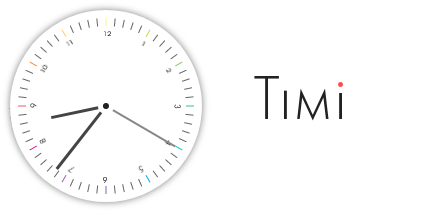

画面上に常駐する、Windows 7のころのウィジェットみたいな時計アプリです。
シンプルでかわいらしく且つ視認性にもある程度優れた、わりといいかんじのデザインだと自分では勝手に思ってます。
使い方・設定項目
インストール
Timi-win32-ia32.zipをダウンロードしたらお好きな場所に解凍し、起動時はTimi.exeをダブルクリックします(特にインストーラなどはありません)。
設定
アプリを起動したら、アイコンはタスクトレイにあります。すべての設定はこのタスクトレイアイコンのコンテキストメニュー(右クリックメニュー)から行います。設定の内容や時計の位置は記憶され、次回起動時も適用されます。
文字盤の形状・・・全体としての時計の形を設定します。
※特に「円形」を選択した場合は、ウィンドウとしてのクリック可能領域と見た目が大きく異なるので注意してください(ドラッグ時に赤い半透明で示される部分)。
背景テーマ・・・デザインを変更します。
ロゴの表示・・・「Timi」のロゴを文字盤に表示するかどうか。
常に手前・・・チェックをつけている状態では、他のウィンドウに隠れることなく最前面で表示します。
アンインストール
①zipファイルを解凍したフォルダをすべて削除します。
②完全に削除したい場合は、C:\Users\ユーザー名\AppData\Roaming\Timiを削除してください(設定内容などが保存されているフォルダです)。